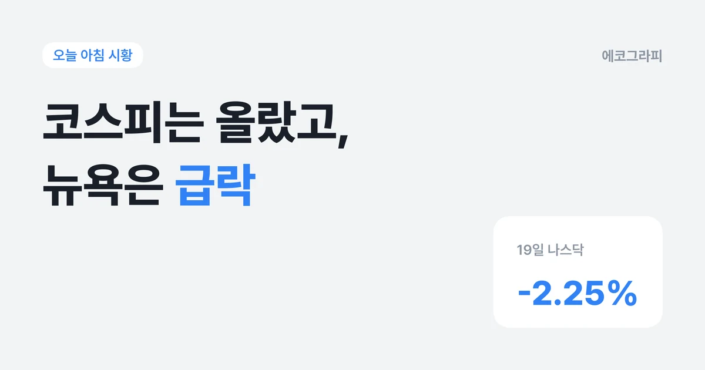
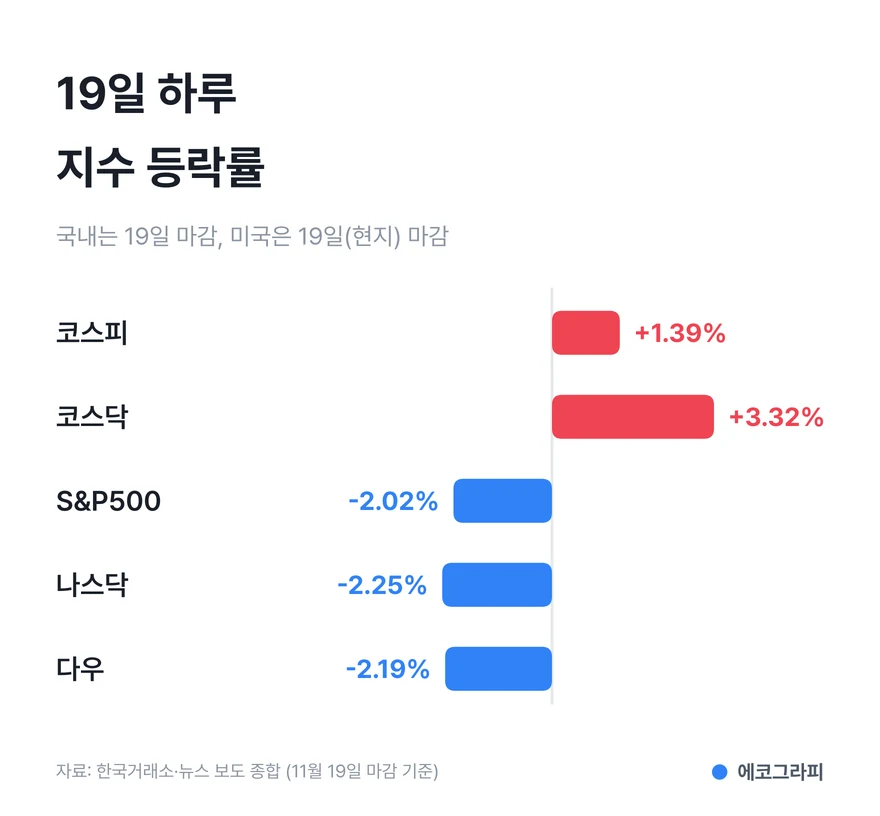
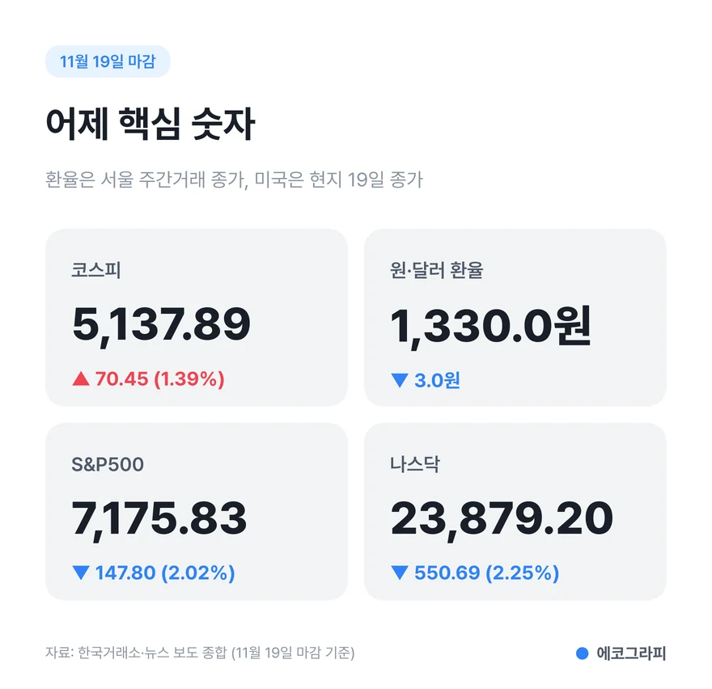
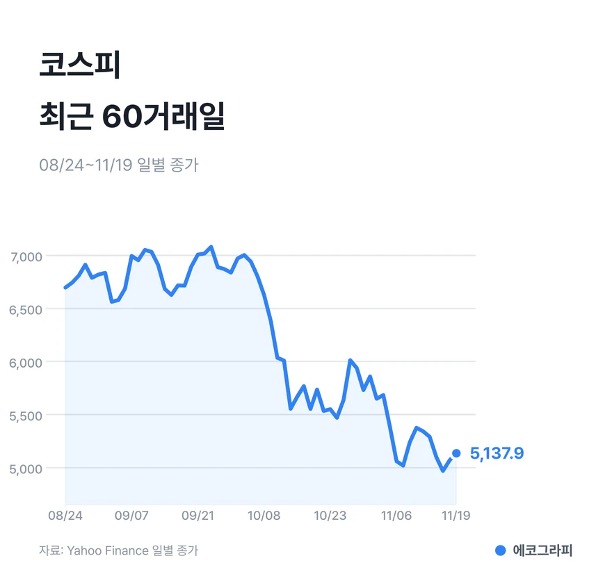
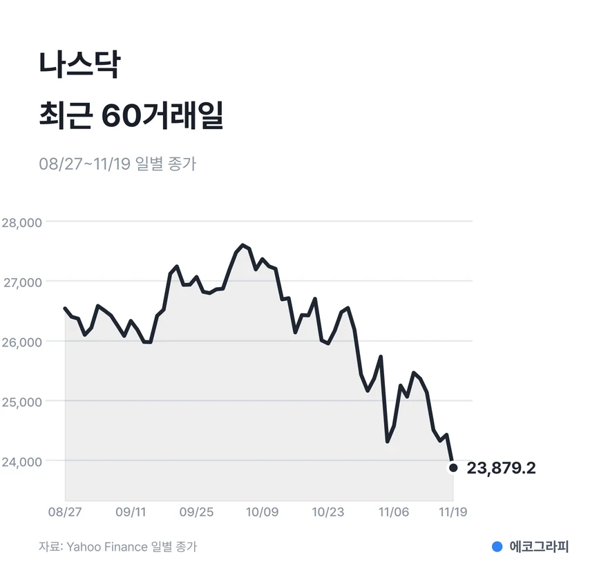
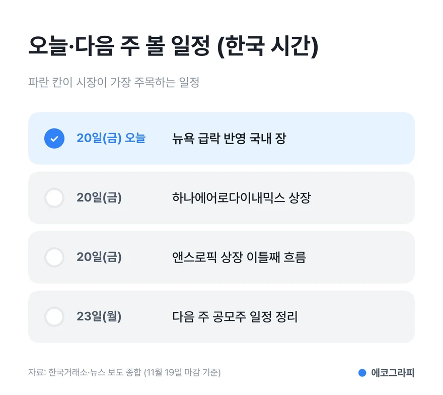

19일은 수능 날이라 장이 평소보다 1시간 늦은 오전 10시에 열렸어요. 코스피는 70.45포인트(1.39%) 오른 5,137.89에 마감했어요. 오전엔 약세를 보이며 한때 5,000선 아래로 밀리기도 했지만, 오후 들어 상승 폭을 키웠어요. 코스닥은 22.00포인트(3.32%) 오른 684.81로 더 크게 올랐어요.
수급은 엇갈렸어요. 코스피에서 외국인은 약 4,035억 원을 팔아 5거래일 연속 순매도했고, 기관은 194억 원을 샀어요. 원·달러 환율은 1,330.0원으로 3.0원 내렸어요. 코스닥 급등 배경은 어제 저녁 속보: 코스닥 3.32% 급등, 684선에 자세히 정리했어요.

미국은 다우 49,097.06(-2.19%), S&P500 7,175.83(-2.02%), 나스닥 23,879.20(-2.25%)로 마감했어요. 세 지수가 모두 2% 넘게 빠졌고, S&P500은 6거래일 연속 내렸어요. 공포지수라 불리는 VIX는 28선으로 15% 넘게 올랐어요.

AI 기업 앤스로픽이 19일(현지) 나스닥에서 거래를 시작했어요. 공모가는 83달러였고, 시초가 111.50달러(+34%)로 출발해 장중 115.10달러까지 올랐어요. 이후 상승 폭을 줄여 97.17달러(공모가 대비 +17.07%)로 마감했어요.
한 줄 정리: 앤스로픽은 올랐지만 지수 전체는 크게 내렸어요. 새 AI 기업에 대한 관심은 컸어도, 금리와 AI 투자 부담에 대한 걱정이 시장 전체를 눌렀어요.
코스피는 이번 주 초 5,000선 아래로 내려갔다가 이틀 연속 오르며 5,100선 위로 돌아왔어요.

나스닥은 최근 고점에서 계속 내려와 어제 24,000선 아래로 떨어졌어요. 일부 보도는 7개월 만의 최저 수준이라고 전했어요.

오늘은 뉴욕 급락이 반영되는 국내 장이에요. 어제 국내 상승을 이끈 반도체주가 미국 반도체지수 하락을 얼마나 따라가는지, 외국인 순매도가 6거래일째 이어지는지 봐야 해요. 코스닥에는 공모가 5,700원인 하나에어로다이내믹스가 상장해요. 공모주가 처음이라면 공모주 청약 기초 글을 먼저 읽어 보세요.

오늘 해볼 것: 오늘 장 마감 때 코스피가 5,000선을 지켰는지, 그리고 원·달러 환율이 다시 올랐는지 함께 확인해 보세요. 미국 급락 뒤 두 숫자가 같이 움직이는지 보면 외국인 분위기를 가늠할 수 있어요.
꼭 그렇진 않지만 다음 날 영향을 받는 경우가 많아요. 특히 반도체처럼 미국과 같이 움직이는 업종은 미국 반도체지수 흐름을 따라가는 편이에요.
한 종목의 흥행과 시장 전체 분위기는 다를 수 있어요. 어제는 AMD 관련 보도, 높은 국채금리, AI 투자 부담 같은 걱정이 기술주 전반을 끌어내렸어요.
수험생 이동으로 출근길이 붐비지 않도록 매년 수능 날엔 주식시장 개장과 마감을 1시간씩 늦춰요.
보통 20 아래면 차분한 편, 30 근처면 불안이 큰 편으로 봐요. 어제는 하루 만에 15% 넘게 올라 불안이 커졌다는 신호였어요.
※ 2026년 11월 기준으로 정리한 글입니다. 세율·제도는 바뀔 수 있으니 거래 전 증권사·국세청 안내를 한 번 더 확인하세요. 특정 종목·상품의 매수·매도 권유가 아닙니다.